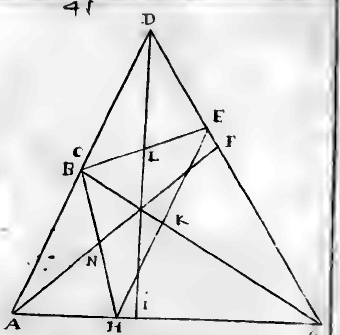

Proposition V: Iterated Nested Ceva Triangles¶


Proposition V · Theorem V (pp. 40–41, Tab. 5, Fig. 41)
If three sides of a triangle be so divided that the ratio of the parts of one is formed from the ratios of the parts of the remaining sides; then, the points of division being joined by three straight lines, so that from them there stands a triangle inscribed in the former, whose sides we likewise partition in the same manner; and finally, from the angles of the triangle to the found second points of division we draw three other lines, these, if produced, will meet at the same point.
Let there be triangle ADG, whose three sides GA, AD, DG are so divided at H, C, E that GH to HA is compounded of the ratios DC to CA, GE to ED. Let lines HC, CE, EH be joined, and let them be so cut at points N, L, K that likewise EL to LC is compounded of the ratios HN to NC, and EK to KH. Lastly let us join lines
f. 0058 · p. 41DL, GK, AN. I say that these, when produced, cut one another at the same point. Let them therefore be produced, and let line GK meet side DA at B; let DL itself meet side AG at I, and lastly let straight line AN cut DG at F. Since in the third element, whose weights are A, CA, EG, G, and whose center is L, straight line GI to IA, that is weight A to G, is compounded of the ratios of weights A to C to E to G, namely of straight lines CD to DA, EL to LC, and DG to ED; but the ratio EL to LC is compounded of the ratios HN to NC, and EK to KH; therefore GI to IA will be compounded of the ratios CD to DA, HN to NC, EK to KH, and DG to ED; or of the ratios CD to CA to AD, HN to NC, EK to KH, DG to GE to ED; but of the two ratios DC to CA, and GE to ED, is compounded HG to AH, which is compounded of the two HG to GA to AH; therefore the ratio GI to IA will be compounded of the ratios, albeit taken in perturbed order, HG to GA to AH, CA to AD, DG to GE, HN to NC, and EK to KH; or again of the same taken in perturbed order, namely HG to GA, EK to KH, DG to GE, CA to AD, HN to NC, GA to AH; and since in the third element, whose weights are A, HA, ED, and D, and whose center is K, DB to BA, namely weight A to D, is compounded of the ratios of weights A to H to E to D, or rather of straight lines HG to GA, EK to KH, and DG to GE; and likewise in the third element, whose weights are D, CD, HG, G, and whose center is N, the ratio GF to FD, namely of weight D to G, is compounded of the ratios of weights D to C to H to G, namely CA to AD, HN to NC, and GA to AH: the ratio GI to IA, which was compounded of the ratios HG to GA, EK to KH, DG to GE, CA to AD, HN to NC, and GA to AH, will therefore also be compounded of the ratios DB to BA, and GF to FD; and therefore by the corollary of Prop. I of this book, lines AN, DL, GK will meet at the same point, which was &c.